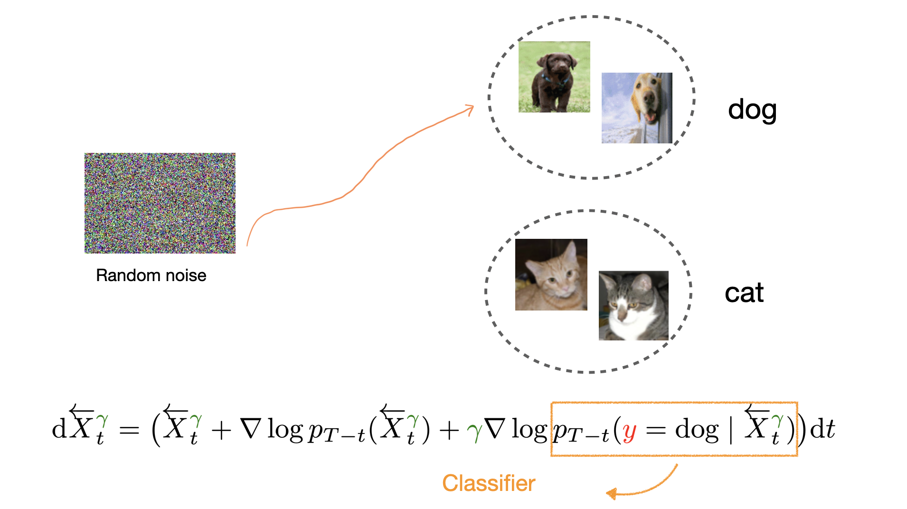

Provably Reliable Classifier Guidance through Cross-entropy Error Control
Under mild smoothness, we show that controlling per-step cross-entropy (conditional KL) also controls guidance-vector error: \( \mathrm{KL} \le \varepsilon^{2} \) implies guidance MSE \( \widetilde{O}(d\varepsilon) \). This gives a sampling-error bound with a reverse log-Sobolev flavor.
ArXiv